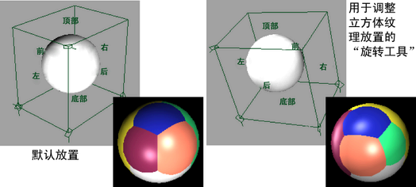

有关该纹理的详细信息，请参见环境立方体。
使用“环境立方体”(Env Cube)材质进行反射
- 创建一种材质，然后将一个“环境立方体”(Env Cube)映射到其“反射的颜色”(Reflected Color)属性。
- 在场景视图中将“环境立方体”(Env Cube)的纹理放置对象设定为可见，并缩放、旋转、平移对象，甚至为变换设置动画。
“环境立方体”(Env Cube)的反射的渲染效果看上去就像纹理中的六个图像直接贴图到放置框的六个面一样。
注： - 硬件渲染的环境立方体贴图与带纹理的 3D 视图相符，但与软件渲染的结果相比，正面和背面的图像将进行交换。
如果希望硬件渲染的结果与软件渲染的结果相符（但是与硬件带纹理的场景视图不相符），请打开立方体贴图的
“属性编辑器”(Attribute Editor)，然后交换正面和背面的图像。
若要实现无限立方体效果以获得向后兼容性，请启用“无限立方体”(Infinite Cube)。
使用立方体的纹理放置对象
- 使用 Maya 的变换工具用于立方体的纹理放置对象，以调整对象上的纹理放置位置。若要查看结果，请对曲面进行 IPR 渲染。
